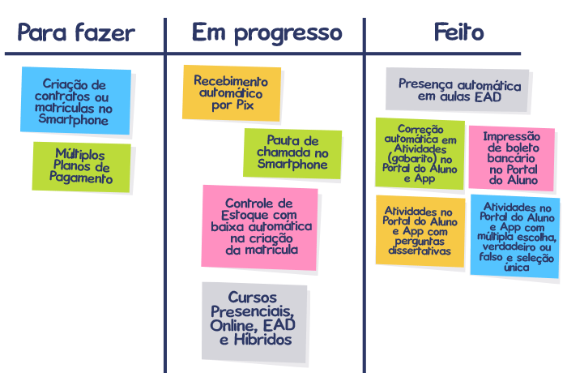

Ações da F10 para enfrentamento no momento de isolamento socialMais informações ›
- Agora é possível gravar pauta em turmas de alunos sem marcar falta ou presença (nesse modelo o aluno irá
receber uma reposição de aula ou falta justificada)
- Implementado novo recurso chamado "Histórico de Turmas", disponível a partir de contratos, turmas e alunos
da turma. As colunas são as mesmas do histórico total
- Na aba Cobrança de Mensalidades, agora é possível fazer a busca por nome do titular do contrato
- Em pauta de chamada, as opções de Reposição e Falta Justificada são exibidas tanto na exibição quanto na
alteração
- Em Direitos de Usuário, agora é gravado Histórico de Observações detalhando todas as operações realizadas
pelo usuário na aba.
- Em Pauta de chamada, o aluno que recebe Falta justificada tem destaque em verde

Você permanecerá com todos os recursos que já utiliza em seu plano atual do portfólio de soluções que compõem seu F10 somados automaticamente a todos aqui descritos.
| 2020 | 4,52% |
| 2021 | 10,06% |
| 2022 | 4,78% |
| 2020 | 23,14% |
| 2021 | 17,78% |
| 2022 | 10,72% |
| 2020 | 0% |
| 2021 | 0% |
| 2022 | 9,12% |
Fontes: *IBGE ** FGV
Para que possamos manter a disponibilidade dos serviços atuais e continuar trabalhando em novos recursos e serviços, a mensalidade do seu F10 será atualizada para o valor de: R$ 742 (setecentos e quarenta e dois reais) a ser pago a partir de 25 de Julho de 2022.
Rafael Moreira - COO F10